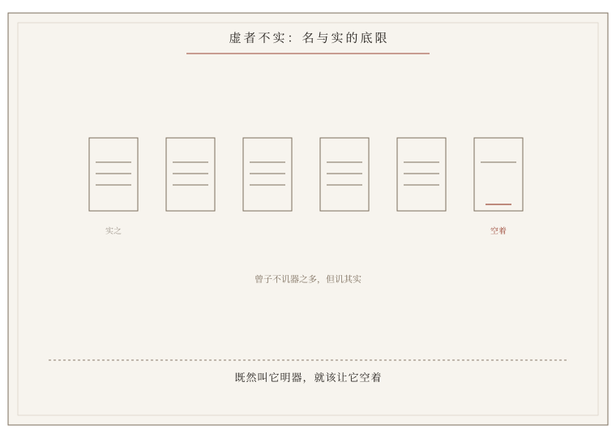

檀弓上 · 三·九十 · 第 293 课
宋襄公葬其夫人，醯醢百甕。曾子曰：「既曰明器矣，而又實之。」
说什么事：宋襄公葬他的夫人，陪葬的醋与肉酱有一百瓮。曾子说：既然叫明器了，怎么又把它装满实物。
落在哪一层：明器之实。论「虚者不实，名实相符」。
为何编在此位：本批自 284「非所托」至此节「名实」，一路都在论礼的公器与界限。此节收在「名与实」上，恰是这一批的结。
【经】宋襄公葬其夫人，醯醢百甕。曾子曰：「既曰明器矣，而又實之。」
【注】言名之為明器，而與祭器皆實之，是亂鬼器與人器。
【疏】此一节论宋襄公失礼之事。案《春秋》，宋襄公卒在僖二十三年。案文十六年传云，宋昭公将田孟诸，未至，襄夫人，周襄王之姊，使甸师攻而杀之，则宋襄公夫人卒在襄公后，其年极多；此得云「宋襄公葬其夫人」者，盖襄公初取夫人死在襄公之时，故得葬之，其后取夫人是襄王之姊，死在襄公之后，义不相妨。「曾子曰：既曰明器，而又实之」者，曾子不讥器之多，但讥其实为非也——言既曰神明之器，当虚也，故讥云「而又实之」。「名之为明器而与祭器皆实之，是乱鬼器与人器也」，案《既夕礼》陈明器后云「无祭器」，郑云「士礼略也，大夫以上兼用鬼器与人器」；若此，大夫诸侯并得人鬼兼用，则空鬼而实人。士既无人器，则亦实明器，故《既夕礼》云「罋三，醯、醢、屑」，又云「甒二，醴、酒也」。若夏后氏专用明器，则分半以实之；殷人全用祭器，则亦分半以虚之；周人兼用明器、人器，人器实之，明器虚之。
宋襄公 宋国国君，卒于僖公二十三年。
醯醢 醋与肉酱。醯，醋；醢，肉酱。
百瓮 一百个陶瓮。瓮，盛物的陶器。
明器 送死之器，注「神明之器」。参 277 节。
实之 把它装满实物。
鬼器 / 人器 鬼器即明器（对死者），人器即祭器（对生者）。
乱鬼器与人器 把两种器混了。
宋襄公葬他的夫人，陪葬的醋与肉酱有一百瓮。曾子说：「既然叫明器了，怎么又把它装满实物。」
此节一句记事、一句评语，评语只有两层意思。
疏把这层意思拆得极准：「曾子不讥器之多，但讥其实为非也。」
——一百瓮是多，但曾子不说多。他说的是：你既然叫它明器，就不该装东西。
注补一句：「名之为明器，而与祭器皆实之，是乱鬼器与人器。」明器是给鬼的，祭器是给人的；周人两样并用，规矩是「空鬼而实人」——鬼器空着，人器装满。宋襄公把一百瓮醯醢装进鬼器里，鬼器人器就混了。
疏还把三代的规矩排了一遍：夏专用明器，则分半以实之；殷全用祭器，则分半以虚之；周兼用，则人器实、明器虚。这是为了说明「明器当虚」不是周人一家的私规。
第一层 名与实的最低要求 「既曰明器矣，而又实之」——这句话的逻辑极简单：你说它是「明」的，就得空着；装满了，它就不是明器了，只是穿了一件明器的名字。曾子抓的正是这里：不问你装了多少，问你装了没有。
第二层 为什么「虚」是明器之本 277 节讲过：明器都做成半成品（竹不收边、瓦不上光），因为生死不可测，不能把话说死。293 节补上一层：不但「不成」，还要「不实」。器既不精善，又不盛物，两样合起来才构成那个「空」——空，正是对不可知的那一侧留出的位置。
把醯醢装进去，等于替死者回答了一个他不该被回答的问题：他还要吃。这就是 277 孔子说的「致生之，不知而不可为」。
第三层 「不讥器之多」的分寸 曾子若说「一百瓮太多」，那只是节俭之论，礼家常有。他偏说「又实之」——把批评从量转到质，从奢侈转到名实。这一转，把一件讲排场的事，变成了一件讲道理的事。
这也是《檀弓》评人的常态：不抨其欲，而指其失其名。
第四层 三代之排比可疑处 疏排的三代之法（夏分半实、殷分半虚、周人实人虚鬼）整齐得近乎理想。参 280 曾子驳仲宪「质文异耳」，可知此类三代表格，正是曾子所不取的。疏家为解此节而排的表，与 280 曾子所讥的表，是同一类东西。此点须留意，不可照抄。
与今日何干 今人以「象征」为名，却把象征之物做得越来越实：纸扎的房、车、钱，越做越像真的，越做越贵。此节问的是同一句话：既然叫它象征，为什么又把它做实。
| 左 | 右 |
|---|---|
| 醯醢百瓮 | 器之多 |
| 既曰明器矣 | 名 |
| 而又实之 | 实 |
| 不讥器之多 | 曾子所不争 |
| 但讥其实 | 曾子所争 |
| 明器当虚 | 名实相符 |
| 空鬼而实人 | 周制之正 |
| 乱鬼器与人器 | 名用相混 |
画一处墓圹之侧，视点略俯。地上整齐排着一列陶瓮（一排十只，纵深处可再排），每只瓮的瓮口都掀开着，瓮内装满了深色的酱状物（只画表面，不画细节）。瓮列之旁另放着一只同样的空瓮，瓮口敞开，里面空无一物。一位深衣者（正面、手指向那只空瓮）立于瓮列之前。不写文字、不画人面细节。赭色只用在那一排装满了的瓮口沿，与那只空瓮内壁的一道暗线。
